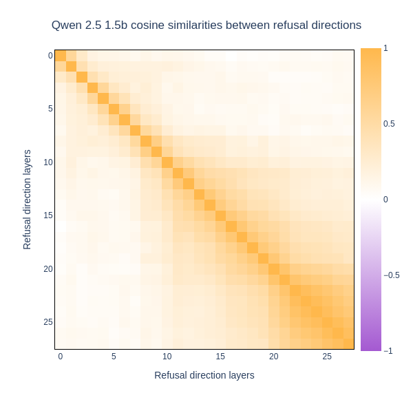
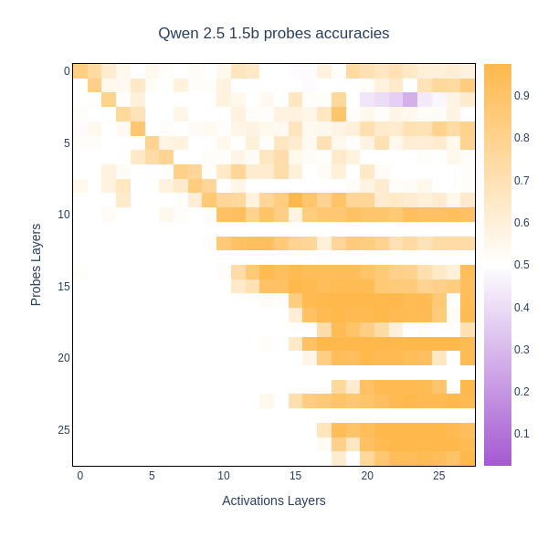

Code
from ssr.lens import Lens
MODEL_NAME = "qwen2.5_1.5b"
lens = Lens.from_preset(MODEL_NAME)Loaded pretrained model Qwen/Qwen2.5-1.5B-Instruct into HookedTransformerThis notebook shows how you can reproduce the experiments of the Appendix Section I: Cross-layer stability of subspaces of the paper.
Requirements:
models.toml if you want to use the Lens.from_config methodprobes_config.jsonLoaded pretrained model Qwen/Qwen2.5-1.5B-Instruct into HookedTransformerimport json
import torch as t
import einops
from ssr.files import load_dataset
from ssr.probes import activations_to_dataloader, train_and_test_classifier
from ssr import DEVICE, PROBES_CONFIG_PATH, pprint
from reproduce_experiments.plot import imshow
titles = {
"llama3.2_1b": "Llama 3.2 1b",
"llama3.2_3b": "Llama 3.2 3b",
"qwen2.5_1.5b": "Qwen 2.5 1.5b",
"gemma2_2b": "Gemma 2 2b",
}
TRAIN_SET = 120
VAL_SET = 40
n_layers = lens.model.cfg.n_layers
display_name = titles[MODEL_NAME]/!\ Padding is set to false for gemma2 2b, so there is only few samples /!\
hf_scan, hl_scan = lens.auto_scan_dataset(max_samples=TRAIN_SET + VAL_SET)
hf_train, hf_val = hf_scan[:, :TRAIN_SET], hf_scan[:, TRAIN_SET:]
hl_train, hl_val = hl_scan[:, :TRAIN_SET], hl_scan[:, TRAIN_SET:]
pprint(hf_train.shape, hl_val.shape)
pprint("""
torch.Size([28, 120, 1536])
torch.Size([28, 40, 1536])
""") 0%| | 0/2 [00:00<?, ?it/s]
0%| | 0/3 [00:00<?, ?it/s]
100%|██████████| 5/5 [00:01<00:00, 3.13it/s]
100%|██████████| 5/5 [00:01<00:00, 3.20it/s]torch.Size([28, 120, 1536]) torch.Size([28, 40, 1536])
torch.Size([28, 160, 1536]) torch.Size([28, 11, 1536])
refusal_directions = hf_train.mean(dim=1) - hl_train.mean(dim=1)
refusal_directions = (
refusal_directions / t.linalg.norm(refusal_directions, dim=-1, keepdim=True).cpu()
)
rscores = einops.einsum(
refusal_directions,
refusal_directions,
"a_layers d_model, b_layers d_model -> a_layers b_layers",
)
imshow(
rscores,
xaxis_title="Refusal direction layers",
yaxis_title="Refusal direction layers",
title=f"Qwen 2.5 1.5b cosine similarities between refusal directions",
size=(600, 600),
border=True,
)Unable to display output for mime type(s): application/vnd.plotly.v1+json
probes = []
with open(PROBES_CONFIG_PATH, "r") as f:
best_configs = json.load(f)[MODEL_NAME]
for layer in range(n_layers):
train_loader, test_loader, _ = activations_to_dataloader(
hf_train[layer], hl_train[layer]
)
classifier, _, metrics = train_and_test_classifier(
train_loader,
test_loader,
d_model=lens.model.cfg.d_model,
loss_name=best_configs[str(layer)]["loss_name"],
optimizer_name=best_configs[str(layer)]["optimizer"],
lr=best_configs[str(layer)]["lr"],
epochs=best_configs[str(layer)]["epochs"],
)
classifier = classifier.to(DEVICE).float().eval()
for param in classifier.parameters():
param.requires_grad = False
print(f"Trained probe at layer: {layer}, with metrics: {metrics}.")
loss_fn = (
t.nn.MSELoss(reduction="none").to(DEVICE)
if best_configs[str(layer)]["loss_name"] == "MSE"
else t.nn.BCELoss(reduction="none").to(DEVICE)
)
probes.append((classifier, loss_fn))
pprint(f"Trained {len(probes)} probes.")Trained probe at layer: 0, with metrics: {'loss': 0.6094189286231995, 'accuracy': 0.6527777777777778, 'precision': 0.5789473684210527, 'recall': 0.7096774193548387, 'f1_score': 0.6376811594202898}.
Trained probe at layer: 1, with metrics: {'loss': 0.6801030437151591, 'accuracy': 0.6805555555555556, 'precision': 0.9259259259259259, 'recall': 0.5434782608695652, 'f1_score': 0.684931506849315}.
Trained probe at layer: 2, with metrics: {'loss': 0.6179111003875732, 'accuracy': 0.6666666666666666, 'precision': 1.0, 'recall': 0.4418604651162791, 'f1_score': 0.6129032258064516}.
Trained probe at layer: 3, with metrics: {'loss': 0.40346136689186096, 'accuracy': 0.8055555555555556, 'precision': 0.8, 'recall': 0.8780487804878049, 'f1_score': 0.8372093023255814}.
Trained probe at layer: 4, with metrics: {'loss': 0.6654650171597799, 'accuracy': 0.7361111111111112, 'precision': 0.8518518518518519, 'recall': 0.6052631578947368, 'f1_score': 0.7076923076923077}.
Trained probe at layer: 5, with metrics: {'loss': 0.39512961606184643, 'accuracy': 0.8194444444444444, 'precision': 0.8461538461538461, 'recall': 0.825, 'f1_score': 0.8354430379746836}.
Trained probe at layer: 6, with metrics: {'loss': 0.42341141899426776, 'accuracy': 0.75, 'precision': 0.775, 'recall': 0.775, 'f1_score': 0.775}.
Trained probe at layer: 7, with metrics: {'loss': 0.3022150347630183, 'accuracy': 0.875, 'precision': 0.8378378378378378, 'recall': 0.9117647058823529, 'f1_score': 0.8732394366197183}.
Trained probe at layer: 8, with metrics: {'loss': 0.27035846809546155, 'accuracy': 0.875, 'precision': 0.8484848484848485, 'recall': 0.875, 'f1_score': 0.8615384615384616}.
Trained probe at layer: 9, with metrics: {'loss': 0.4207296371459961, 'accuracy': 0.8472222222222222, 'precision': 0.7714285714285715, 'recall': 0.9, 'f1_score': 0.8307692307692308}.
Trained probe at layer: 10, with metrics: {'loss': 0.19490895917018256, 'accuracy': 0.875, 'precision': 0.8648648648648649, 'recall': 0.8888888888888888, 'f1_score': 0.8767123287671232}./home/sckathach/miniconda3/envs/ssr/lib/python3.12/site-packages/sklearn/metrics/_classification.py:1565: UndefinedMetricWarning:
Precision is ill-defined and being set to 0.0 due to no predicted samples. Use `zero_division` parameter to control this behavior.
Trained probe at layer: 11, with metrics: {'loss': 0.6354166666666666, 'accuracy': 0.4444444444444444, 'precision': 0.0, 'recall': 0.0, 'f1_score': 0.0}.
Trained probe at layer: 12, with metrics: {'loss': 0.14858692698180676, 'accuracy': 0.9305555555555556, 'precision': 0.9444444444444444, 'recall': 0.918918918918919, 'f1_score': 0.9315068493150684}.
Trained probe at layer: 13, with metrics: {'loss': 47.916666666666664, 'accuracy': 0.4861111111111111, 'precision': 0.4861111111111111, 'recall': 1.0, 'f1_score': 0.6542056074766355}.
Trained probe at layer: 14, with metrics: {'loss': 0.46372726559638977, 'accuracy': 0.9444444444444444, 'precision': 0.9069767441860465, 'recall': 1.0, 'f1_score': 0.9512195121951219}.
Trained probe at layer: 15, with metrics: {'loss': 0.29669641778491496, 'accuracy': 0.9722222222222222, 'precision': 1.0, 'recall': 0.9393939393939394, 'f1_score': 0.96875}.
Trained probe at layer: 16, with metrics: {'loss': 0.08367595635354519, 'accuracy': 0.9861111111111112, 'precision': 1.0, 'recall': 0.9736842105263158, 'f1_score': 0.9866666666666667}.
Trained probe at layer: 17, with metrics: {'loss': 0.09629213386583994, 'accuracy': 0.9722222222222222, 'precision': 1.0, 'recall': 0.95, 'f1_score': 0.9743589743589743}.
Trained probe at layer: 18, with metrics: {'loss': 0.01977222643472487, 'accuracy': 0.9861111111111112, 'precision': 0.9736842105263158, 'recall': 1.0, 'f1_score': 0.9866666666666667}.
Trained probe at layer: 19, with metrics: {'loss': 0.3762146184841792, 'accuracy': 0.9583333333333334, 'precision': 1.0, 'recall': 0.9166666666666666, 'f1_score': 0.9565217391304348}.
Trained probe at layer: 20, with metrics: {'loss': 0.002270933385564907, 'accuracy': 1.0, 'precision': 1.0, 'recall': 1.0, 'f1_score': 1.0}.
Trained probe at layer: 21, with metrics: {'loss': 64.58333333333333, 'accuracy': 0.4305555555555556, 'precision': 0.4305555555555556, 'recall': 1.0, 'f1_score': 0.6019417475728155}.
Trained probe at layer: 22, with metrics: {'loss': 0.12148330112298329, 'accuracy': 0.9722222222222222, 'precision': 0.9736842105263158, 'recall': 0.9736842105263158, 'f1_score': 0.9736842105263158}.
Trained probe at layer: 23, with metrics: {'loss': 0.13801351189619024, 'accuracy': 0.9722222222222222, 'precision': 1.0, 'recall': 0.9473684210526315, 'f1_score': 0.972972972972973}.
Trained probe at layer: 24, with metrics: {'loss': 48.958333333333336, 'accuracy': 0.4722222222222222, 'precision': 0.0, 'recall': 0.0, 'f1_score': 0.0}.
Trained probe at layer: 25, with metrics: {'loss': 0.20474679587022018, 'accuracy': 0.9861111111111112, 'precision': 1.0, 'recall': 0.96875, 'f1_score': 0.9841269841269841}.
Trained probe at layer: 26, with metrics: {'loss': 0.04139736263702313, 'accuracy': 0.9861111111111112, 'precision': 0.967741935483871, 'recall': 1.0, 'f1_score': 0.9836065573770492}.
Trained probe at layer: 27, with metrics: {'loss': 0.054853261836494006, 'accuracy': 0.9861111111111112, 'precision': 1.0, 'recall': 0.9722222222222222, 'f1_score': 0.9859154929577465}./home/sckathach/miniconda3/envs/ssr/lib/python3.12/site-packages/sklearn/metrics/_classification.py:1565: UndefinedMetricWarning:
Precision is ill-defined and being set to 0.0 due to no predicted samples. Use `zero_division` parameter to control this behavior.
Trained 28 probes.
scores = t.zeros(n_layers, n_layers)
for a in range(n_layers):
for b in range(n_layers):
scores[a, b] = (
(probes[a][0].forward(hf_val[b].cuda().float()) < 0.5).sum()
/ hf_val[b].shape[0]
+ (probes[a][0].forward(hl_val[b].cuda().float()) > 0.5).sum()
/ hl_val[b].shape[0]
) / 2
imshow(
scores,
color_continuous_midpoint=0.5,
xaxis_title="Activations Layers",
yaxis_title="Probes Layers",
title=f"{display_name} probes accuracies",
size=(600, 600),
border=True,
)Unable to display output for mime type(s): application/vnd.plotly.v1+json